Administrator’s guide¶
This guide explains how to deploy and manage a Tarantool cluster with Tarantool Cartridge.
Note
For more information on managing Tarantool instances, see the server administration section of the Tarantool manual.
Before deploying the cluster, familiarize yourself with the notion of cluster roles and deploy Tarantool instances according to the desired cluster topology.
Deploying the cluster¶
To deploy the cluster, first, configure your Tarantool instances according to the desired cluster topology, for example:
my_app.router: {"advertise_uri": "localhost:3301", "http_port": 3301, "workdir": "./tmp/router"}
my_app.storage_A_master: {"advertise_uri": "localhost:3302", "http_enabled": False, "workdir": "./tmp/storage-a-master"}
my_app.storage_A_replica: {"advertise_uri": "localhost:3303", "http_enabled": False, "workdir": "./tmp/storage-a-replica"}
my_app.storage_B_master: {"advertise_uri": "localhost:3304", "http_enabled": False, "workdir": "./tmp/storage-b-master"}
my_app.storage_B_replica: {"advertise_uri": "localhost:3305", "http_enabled": False, "workdir": "./tmp/storage-b-replica"}
Then start the instances, for example using
cartridge CLI:
cartridge start my_app --cfg demo.yml --run_dir ./tmp/run --foreground
And bootstrap the cluster.
You can do this via the Web interface which is available at
http://<instance_hostname>:<instance_http_port>
(in this example, http://localhost:3301).
In the web interface, do the following:
Depending on the authentication state:
If enabled (in production), enter your credentials and click Login:
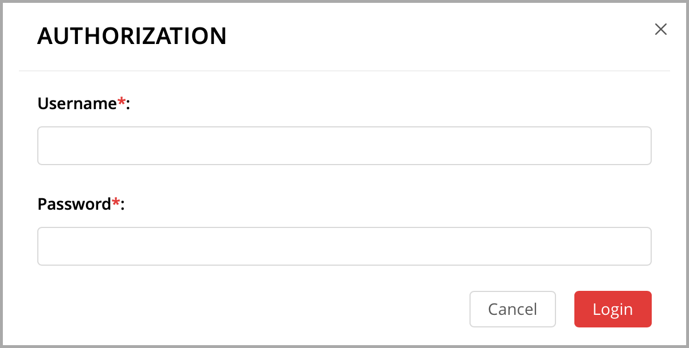If disabled (for easier testing), simply proceed to configuring the cluster.
Click Сonfigure next to the first unconfigured server to create the first replica set – solely for the router (intended for compute-intensive workloads).
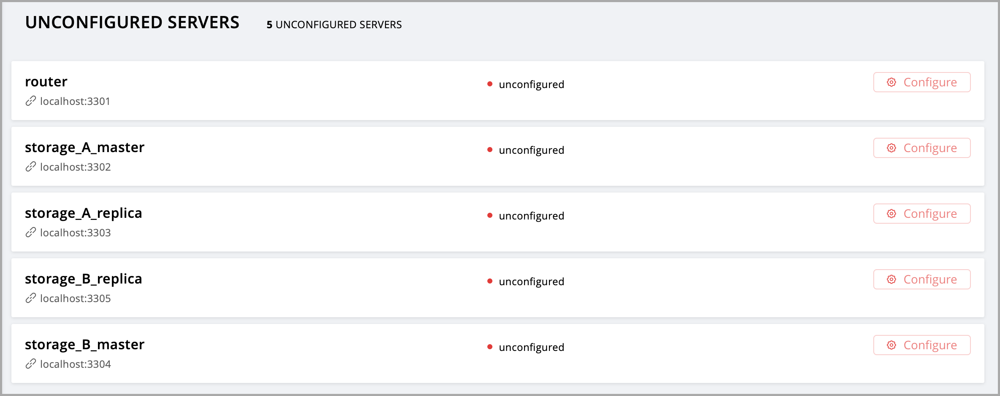In the pop-up window, check the
vshard-routerrole – or any custom role that hasvshard-routeras a dependent role (in this example, this is a custom role namedapp.roles.api).(Optional) Specify a display name for the replica set, for example
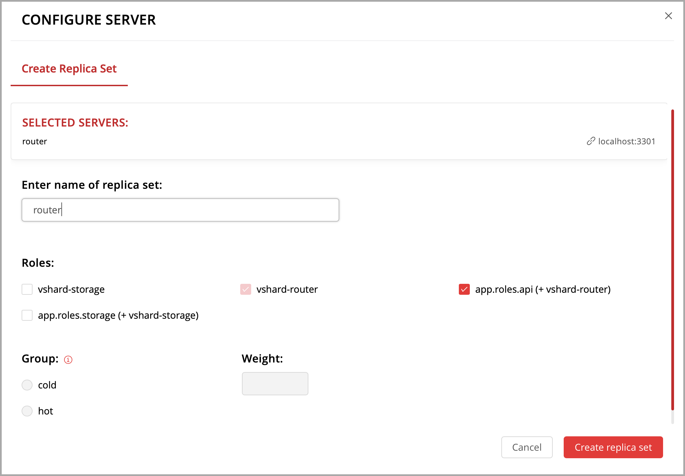router.Note
As described in the built-in roles section, it is a good practice to enable workload-specific cluster roles on instances running on physical servers with workload-specific hardware.
Click Create replica set and see the newly-created replica set in the web interface:
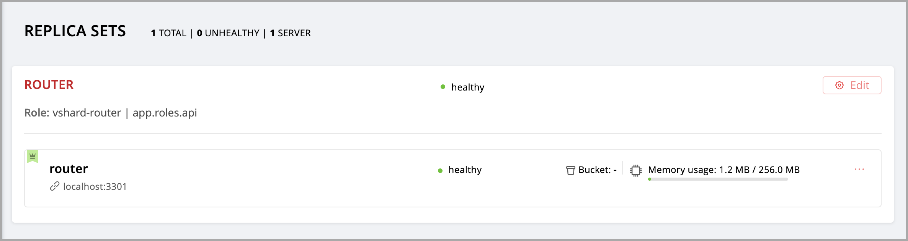Warning
Be careful: after an instance joins a replica set, you CAN NOT revert this or make the instance join any other replica set.
Create another replica set – for a master storage node (intended for transaction-intensive workloads).
Check the
vshard-storagerole – or any custom role that hasvshard-storageas a dependent role (in this example, this is a custom role namedapp.roles.storage).(Optional) Check a specific group, for example
hot. Replica sets withvshard-storageroles can belong to different groups. In our example, these arehotorcoldgroups meant to process hot and cold data independently. These groups are specified in the cluster’s configuration file; by default, a cluster has no groups.(Optional) Specify a display name for the replica set, for example
hot-storage.Click Create replica set.
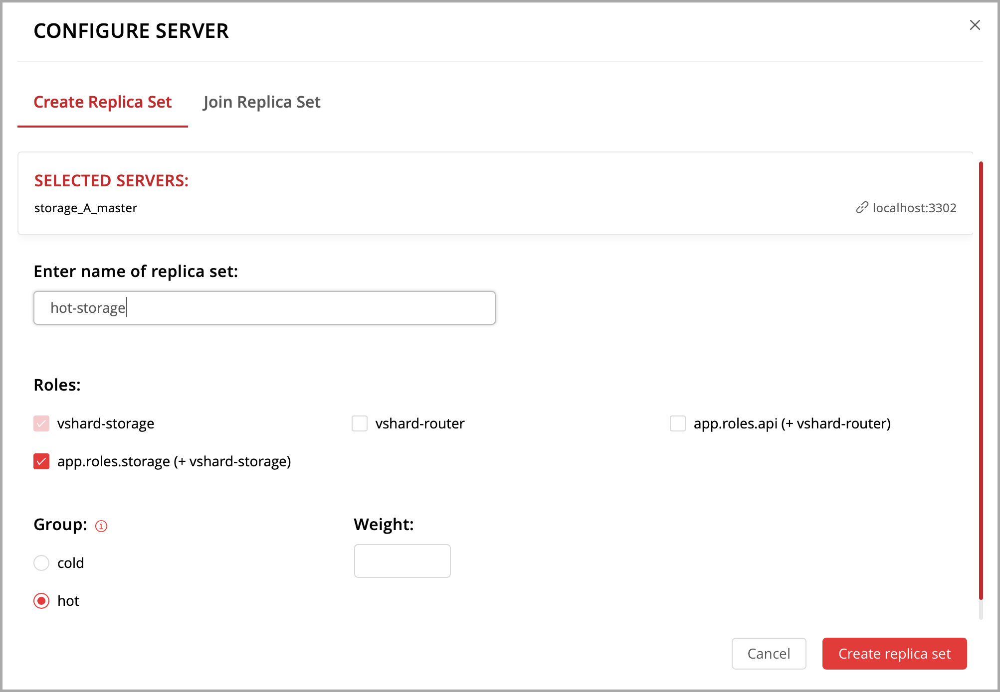(Optional) If required by topology, populate the second replica set with more storage nodes:
Click Configure next to another unconfigured server dedicated for transaction-intensive workloads.
Click Join Replica Set tab.
Select the second replica set, and click Join replica set to add the server to it.
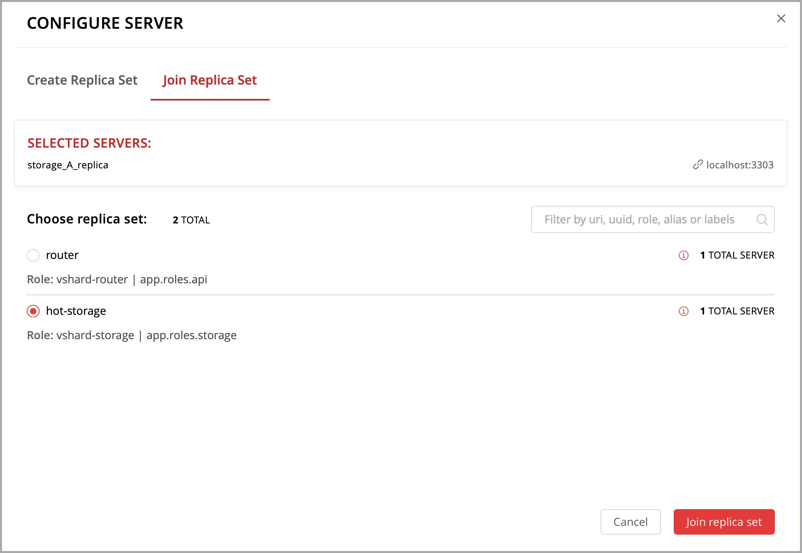
Depending on cluster topology:
add more instances to the first or second replica sets, or
create more replica sets and populate them with instances meant to handle a specific type of workload (compute or transactions).
For example:
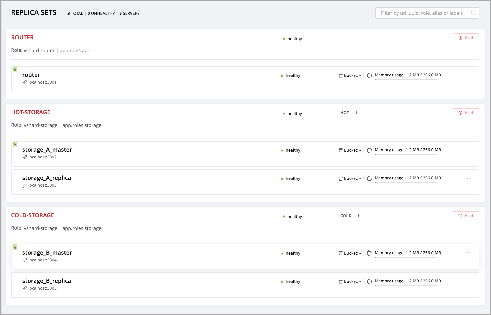(Optional) By default, all new
vshard-storagereplica sets get a weight of1before thevshardbootstrap in the next step.Note
In case you add a new replica set after
vshardbootstrap, as described in the topology change section, it will get a weight of 0 by default.To make different replica sets store different numbers of buckets, click Edit next to a replica set, change its default weight, and click Save:
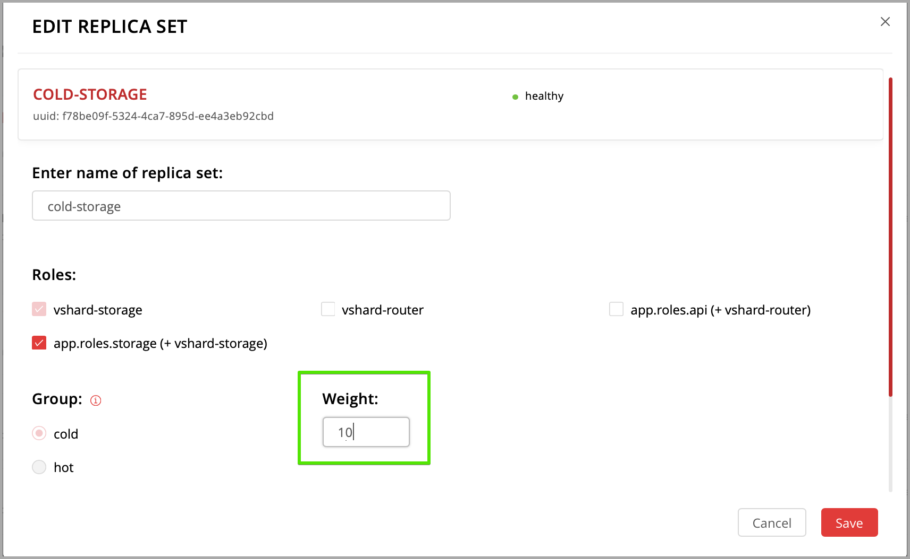For more information on buckets and replica set’s weights, see the vshard module documentation.
Bootstrap
vshardby clicking the corresponding button, or by sayingcartridge.admin.boostrap_vshard()over the administrative console.This command creates virtual buckets and distributes them among storages.
From now on, all cluster configuration can be done via the web interface.
{kind=link}
{kind=link}
{kind=link}
{kind=link}
{kind=link}
{kind=link}
{kind=link}
{kind=link}
Updating the configuration¶
Cluster configuration is specified in a YAML configuration file. This file includes cluster topology and role descriptions.
All instances in Tarantool cluster have the same configuration. To this end, every instance stores a copy of the configuration file, and the cluster keeps these copies in sync: as you submit updated configuration in the Web interface, the cluster validates it (and rejects inappropriate changes) and distributes automatically across the cluster.
To update the configuration:
Click Configuration files tab.
(Optional) Click Downloaded to get hold of the current configuration file.
Update the configuration file.
You can add/change/remove any sections except system ones:
topology,vshard, andvshard_groups.To remove a section, simply remove it from the configuration file.
Compress the configuration file as a
.ziparchive and click Upload configuration button to upload it.You will see a message in the lower part of the screen saying whether configuration was uploaded successfully, and an error description if the new configuration was not applied.
Managing the cluster¶
This chapter explains how to:
change the cluster topology,
enable automatic failover,
switch the replica set’s master manually,
deactivate replica sets, and
expel instances.
Changing the cluster topology¶
Upon adding a newly deployed instance to a new or existing replica set:
The cluster validates the configuration update by checking if the new instance is available using the membership module.
Note
The
membershipmodule works over the UDP protocol and can operate before thebox.cfgfunction is called.All the nodes in the cluster must be healthy for validation success.
The new instance waits until another instance in the cluster receives the configuration update and discovers it, again, using the
membershipmodule. On this step, the new instance does not have a UUID yet.Once the instance realizes its presence is known to the cluster, it calls the box.cfg function and starts living its life.
An optimal strategy for connecting new nodes to the cluster is to deploy a new zero-weight replica set instance by instance, and then increase the weight. Once the weight is updated and all cluster nodes are notified of the configuration change, buckets start migrating to new nodes.
To populate the cluster with more nodes, do the following:
Deploy new Tarantool instances as described in the deployment section.
If new nodes do not appear in the Web interface, click Probe server and specify their URIs manually.
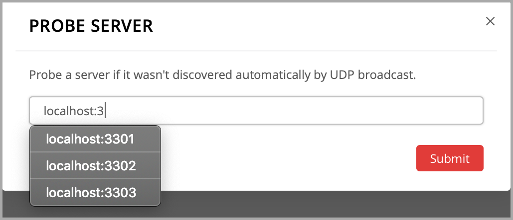If a node is accessible, it will appear in the list.
In the Web interface:
Create a new replica set with one of the new instances: click Configure next to an unconfigured server, check the necessary roles, and click Create replica set:
Note
In case you are adding a new
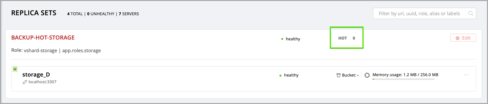vshard-storageinstance, remember that all such instances get a0weight by default after thevshardbootstrap which happened during the initial cluster deployment.Or add the instances to existing replica sets: click Configure next to an unconfigured server, click Join replica set tab, select a replica set, and click Join replica set.
If necessary, repeat this for more instances to reach the desired redundancy level.
In case you are deploying a new
vshard-storagereplica set, populate it with data when you are ready: click Edit next to the replica set in question, increase its weight, and click Save to start data rebalancing.
{kind=link}
{kind=link}
As an alternative to the web interface, you can view and change cluster topology
via GraphQL. The cluster’s endpoint for serving GraphQL queries is /admin/api.
You can use any third-party GraphQL client like
GraphiQL or
Altair.
Examples:
listing all servers in the cluster:
query { servers { alias uri uuid } }
listing all replica sets with their servers:
query { replicasets { uuid roles servers { uri uuid } } }
joining a server to a new replica set with a storage role enabled:
mutation { join_server( uri: "localhost:33003" roles: ["vshard-storage"] ) }
Data rebalancing¶
Rebalancing (resharding) is initiated periodically and upon adding a new replica
set with a non-zero weight to the cluster. For more information, see the
rebalancing process section
of the vshard module documentation.
The most convenient way to trace through the process of rebalancing is to monitor the number of active buckets on storage nodes. Initially, a newly added replica set has 0 active buckets. After a few minutes, the background rebalancing process begins to transfer buckets from other replica sets to the new one. Rebalancing continues until the data is distributed evenly among all replica sets.
To monitor the current number of buckets, connect to any Tarantool instance over the administrative console, and say:
tarantool> vshard.storage.info().bucket
---
- receiving: 0
active: 1000
total: 1000
garbage: 0
sending: 0
...
The number of buckets may be increasing or decreasing depending on whether the rebalancer is migrating buckets to or from the storage node.
For more information on the monitoring parameters, see the monitoring storages section.
Deactivating replica sets¶
To deactivate an entire replica set (e.g., to perform maintenance on it) means to move all of its buckets to other sets.
To deactivate a set, do the following:
Click Edit next to the set in question.
Set its weight to
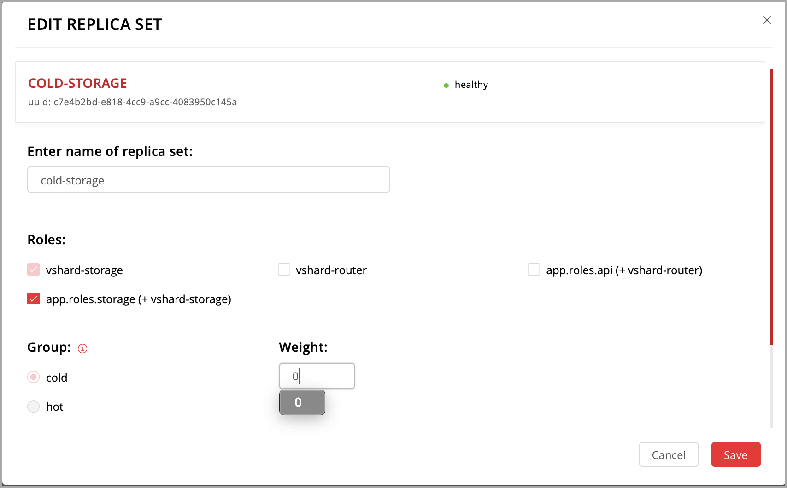0and click Save:Wait for the rebalancing process to finish migrating all the set’s buckets away. You can monitor the current bucket number as described in the data rebalancing section.
{kind=link}
Expelling instances¶
Once an instance is expelled, it can never participate in the cluster again as every instance will reject it.
To expel an instance, click … next to it, then click Expel server and Expel:
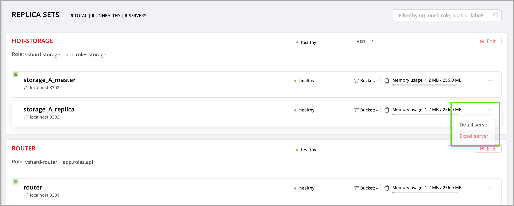{kind=link}
Note
There are two restrictions:
You can’t expel a leader if it has a replica. Switch leadership first.
You can’t expel a vshard-storage if it has buckets. Set the weight to zero and wait until rebalancing is completed.
Enabling automatic failover¶
In a master-replica cluster configuration with automatic failover enabled, if the user-specified master of any replica set fails, the cluster automatically chooses the next replica from the priority list and grants it the active master role (read/write). When the failed master comes back online, its role is restored and the active master, again, becomes a replica (read-only). This works for any roles.
To set the priority in a replica set:
Click Edit next to the replica set in question.
Scroll to the bottom of the Edit replica set box to see the list of servers.
Drag replicas to their place in the priority list, and click Save:
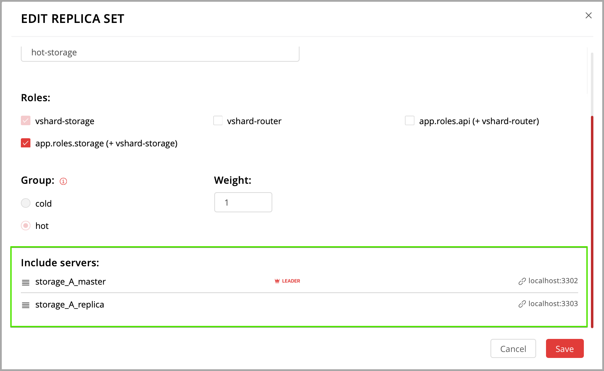
{kind=link}
The failover is disabled by default. To enable it:
{kind=link}
{kind=link}
The failover status will change to enabled:
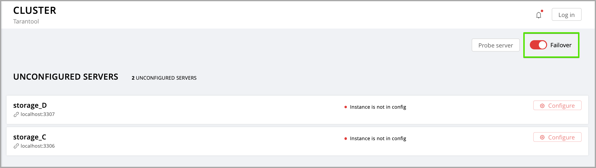{kind=link}
For more information, see the replication section of the Tarantool manual.
Switching the replica set’s master¶
To manually switch the master in a replica set:
Click the Edit button next to the replica set in question:
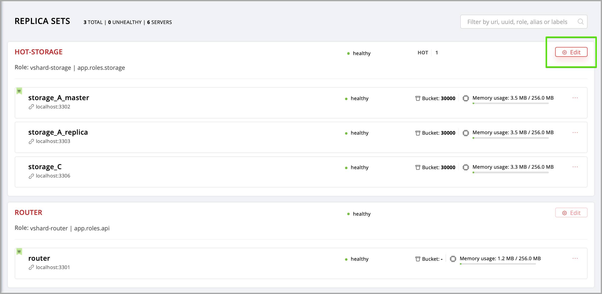Scroll to the bottom of the Edit replica set box to see the list of servers. The server on the top is the master.
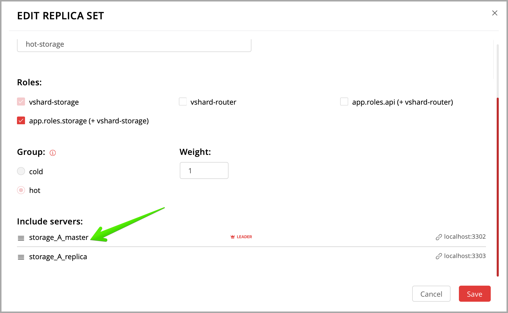Drag a required server to the top position and click Save.
{kind=link}
{kind=link}
The new master will automatically enter the read/write mode, while the ex-master will become read-only. This works for any roles.
Managing users¶
On the Users tab, you can enable/disable authentication as well as add, remove, edit, and view existing users who can access the web interface.
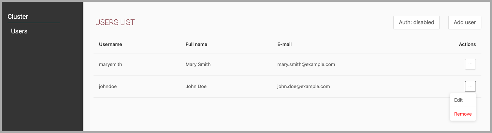{kind=link}
Notice that the Users tab is available only if authorization in the web interface is implemented.
Also, some features (like deleting users) can be disabled in the cluster
configuration; this is regulated by the
auth_backend_name
option passed to cartridge.cfg().
Resolving conflicts¶
Tarantool has an embedded mechanism for asynchronous replication. As a consequence, records are distributed among the replicas with a delay, so conflicts can arise.
To prevent conflicts, the special trigger space.before_replace is used. It is
executed every time before making changes to the table for which it was configured.
The trigger function is implemented in the Lua programming language. This function
takes the original and new values of the tuple to be modified as its arguments.
The returned value of the function is used to change the result of the operation:
this will be the new value of the modified tuple.
For insert operations, the old value is absent, so nil is passed as the first
argument.
For delete operations, the new value is absent, so nil is passed as the second
argument. The trigger function can also return nil, thus turning this operation
into delete.
This example shows how to use the space.before_replace trigger to prevent
replication conflicts. Suppose we have a box.space.test table that is modified in
multiple replicas at the same time. We store one payload field in this table. To
ensure consistency, we also store the last modification time in each tuple of this
table and set the space.before_replace trigger, which gives preference to
newer tuples. Below is the code in Lua:
fiber = require('fiber')
-- define a function that will modify the function test_replace(tuple)
-- add a timestamp to each tuple in the space
tuple = box.tuple.new(tuple):update{{'!', 2, fiber.time()}}
box.space.test:replace(tuple)
end
box.cfg{ } -- restore from the local directory
-- set the trigger to avoid conflicts
box.space.test:before_replace(function(old, new)
if old ~= nil and new ~= nil and new[2] < old[2] then
return old -- ignore the request
end
-- otherwise apply as is
end)
box.cfg{ replication = {...} } -- subscribe
Monitoring a cluster via CLI¶
This section describes parameters you can monitor over the administrative console.
Connecting to nodes via CLI¶
Each Tarantool node (router/storage) provides an administrative console
(Command Line Interface) for debugging, monitoring, and troubleshooting. The
console acts as a Lua interpreter and displays the result in the human-readable
YAML format. To connect to a Tarantool instance via the console, say:
$ tarantoolctl connect <instance_hostname>:<port>
where the <instance_hostname>:<port> is the instance’s URI.
Monitoring storages¶
Use vshard.storage.info() to obtain information on storage nodes.
Output example¶
tarantool> vshard.storage.info()
---
- replicasets:
<replicaset_2>:
uuid: <replicaset_2>
master:
uri: storage:storage@127.0.0.1:3303
<replicaset_1>:
uuid: <replicaset_1>
master:
uri: storage:storage@127.0.0.1:3301
bucket: <!-- buckets status
receiving: 0 <!-- buckets in the RECEIVING state
active: 2 <!-- buckets in the ACTIVE state
garbage: 0 <!-- buckets in the GARBAGE state (are to be deleted)
total: 2 <!-- total number of buckets
sending: 0 <!-- buckets in the SENDING state
status: 1 <!-- the status of the replica set
replication:
status: disconnected <!-- the status of the replication
idle: <idle>
alerts:
- ['MASTER_IS_UNREACHABLE', 'Master is unreachable: disconnected']
Status list¶
Code |
Critical level |
Description |
0 |
Green |
A replica set works in a regular way. |
1 |
Yellow |
There are some issues, but they don’t affect a replica set efficiency (worth noticing, but don’t require immediate intervention). |
2 |
Orange |
A replica set is in a degraded state. |
3 |
Red |
A replica set is disabled. |
Potential issues¶
MISSING_MASTER— No master node in the replica set configuration.Critical level: Orange.
Cluster condition: Service is degraded for data-change requests to the replica set.
Solution: Set the master node for the replica set in the configuration using API.
UNREACHABLE_MASTER— No connection between the master and the replica.Critical level:
If idle value doesn’t exceed T1 threshold (1 s.) — Yellow,
If idle value doesn’t exceed T2 threshold (5 s.) — Orange,
If idle value exceeds T3 threshold (10 s.) — Red.
Cluster condition: For read requests to replica, the data may be obsolete compared with the data on master.
Solution: Reconnect to the master: fix the network issues, reset the current master, switch to another master.
LOW_REDUNDANCY— Master has access to a single replica only.Critical level: Yellow.
Cluster condition: The data storage redundancy factor is equal to 2. It is lower than the minimal recommended value for production usage.
Solution: Check cluster configuration:
If only one master and one replica are specified in the configuration, it is recommended to add at least one more replica to reach the redundancy factor of 3.
If three or more replicas are specified in the configuration, consider checking the replicas’ states and network connection among the replicas.
INVALID_REBALANCING— Rebalancing invariant was violated. During migration, a storage node can either send or receive buckets. So it shouldn’t be the case that a replica set sends buckets to one replica set and receives buckets from another replica set at the same time.Critical level: Yellow.
Cluster condition: Rebalancing is on hold.
Solution: There are two possible reasons for invariant violation:
The
rebalancerhas crashed.Bucket states were changed manually.
Either way, please contact Tarantool support.
HIGH_REPLICATION_LAG— Replica’s lag exceeds T1 threshold (1 sec.).Critical level:
If the lag doesn’t exceed T1 threshold (1 sec.) — Yellow;
If the lag exceeds T2 threshold (5 sec.) — Orange.
Cluster condition: For read-only requests to the replica, the data may be obsolete compared with the data on the master.
Solution: Check the replication status of the replica. Further instructions are given in the Tarantool troubleshooting guide.
OUT_OF_SYNC— Mal-synchronization occured. The lag exceeds T3 threshold (10 sec.).Critical level: Red.
Cluster condition: For read-only requests to the replica, the data may be obsolete compared with the data on the master.
Solution: Check the replication status of the replica. Further instructions are given in the Tarantool troubleshooting guide.
UNREACHABLE_REPLICA— One or multiple replicas are unreachable.Critical level: Yellow.
Cluster condition: Data storage redundancy factor for the given replica set is less than the configured factor. If the replica is next in the queue for rebalancing (in accordance with the weight configuration), the requests are forwarded to the replica that is still next in the queue.
Solution: Check the error message and find out which replica is unreachable. If a replica is disabled, enable it. If this doesn’t help, consider checking the network.
UNREACHABLE_REPLICASET— All replicas except for the current one are unreachable. Critical level: Red.Cluster condition: The replica stores obsolete data.
Solution: Check if the other replicas are enabled. If all replicas are enabled, consider checking network issues on the master. If the replicas are disabled, check them first: the master might be working properly.
Monitoring routers¶
Use vshard.router.info() to obtain information on the router.
Output example¶
tarantool> vshard.router.info()
---
- replicasets:
<replica set UUID>:
master:
status: <available / unreachable / missing>
uri: <!-- URI of master
uuid: <!-- UUID of instance
replica:
status: <available / unreachable / missing>
uri: <!-- URI of replica used for slave requests
uuid: <!-- UUID of instance
uuid: <!-- UUID of replica set
<replica set UUID>: ...
...
status: <!-- status of router
bucket:
known: <!-- number of buckets with the known destination
unknown: <!-- number of other buckets
alerts: [<alert code>, <alert description>], ...
Status list¶
Code |
Critical level |
Description |
0 |
Green |
The |
1 |
Yellow |
Some replicas sre unreachable (affects the speed of executing read requests). |
2 |
Orange |
Service is degraded for changing data. |
3 |
Red |
Service is degraded for reading data. |
Potential issues¶
Note
Depending on the nature of the issue, use either the UUID of a replica, or the UUID of a replica set.
MISSING_MASTER— The master in one or multiple replica sets is not specified in the configuration.Critical level: Orange.
Cluster condition: Partial degrade for data-change requests.
Solution: Specify the master in the configuration.
UNREACHABLE_MASTER— Therouterlost connection with the master of one or multiple replica sets.Critical level: Orange.
Cluster condition: Partial degrade for data-change requests.
Solution: Restore connection with the master. First, check if the master is enabled. If it is, consider checking the network.
SUBOPTIMAL_REPLICA— There is a replica for read-only requests, but this replica is not optimal according to the configured weights. This means that the optimal replica is unreachable.Critical level: Yellow.
Cluster condition: Read-only requests are forwarded to a backup replica.
Solution: Check the status of the optimal replica and its network connection.
UNREACHABLE_REPLICASET— A replica set is unreachable for both read-only and data-change requests.Critical Level: Red.
Cluster condition: Partial degrade for read-only and data-change requests.
Solution: The replica set has an unreachable master and replica. Check the error message to detect this replica set. Then fix the issue in the same way as for UNREACHABLE_REPLICA.
Disaster recovery¶
Please see the disaster recovery section in the Tarantool manual.
Backups¶
Please see the backups section in the Tarantool manual.